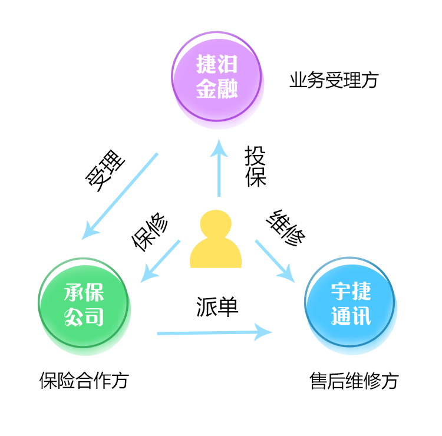
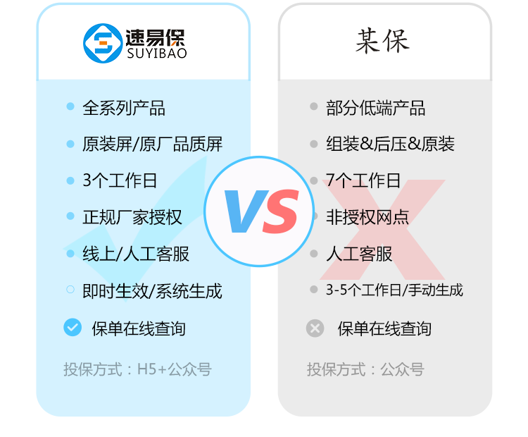

速易保平台由上海捷汨金融服务有限公司创立，是专业的手机售后及增值业务服务平台。公司专注于手机后市场，以成为国内领先的手机服务商为目标，并率先与众安达成战略合作，作为众安保险手机碎屏险全国代理销售商，为用户提供高品质、专业便捷的手机保险、手机维修、回收、以旧换新等创新型的标准化服务，为用户手机提供全生命周期的保护。手机理赔维修统一由宇捷通讯承接售后维修服务。
其中，碎屏保业务专门针对手机屏幕保护而推出，购买该服务后，用户手机意外碎屏即可享受免费的原厂原装屏幕换新服务。该服务由中国第一家互联网财产保险公司众安承保，售后维修由手机生产厂商官方授权的权威维修机构提供手机维修服务。
并且是市面唯一一家对曲面屏手机承保的碎屏险销售商，目前碎屏险激活投保平台由“速分期上海捷汨”微信公众号外发。
保险周期：至购买之日起，针对屏幕质保一年，且免费更换一次原装屏幕总成。
 如有疑问可咨询客服热线：400-8330-226